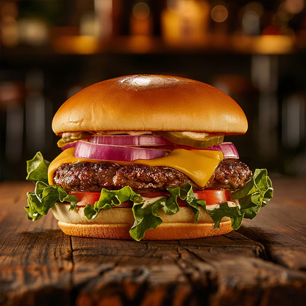
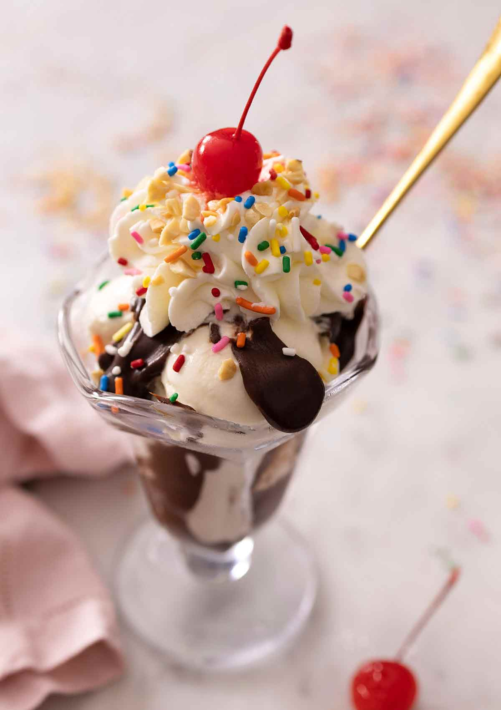

My Favorite Recipes
Homemade Pizza

Ingredients
- Pizza dough
- Tomato sauce
- Mozzarella cheese
- Pepperoni
- Olive oil
Instructions
- Preheat oven to 425°F.
- Roll out the dough onto a baking sheet.
- Spread tomato sauce evenly.
- Add cheese and toppings.
- Bake for 12–15 minutes until golden.
Classic Burger

Ingredients
- Ground beef
- Burger buns
- Lettuce
- Tomato slices
- Cheddar cheese
Instructions
- Form beef into patties.
- Cook patties on grill for 4–5 minutes per side.
- Toast buns lightly.
- Add cheese to patties.
- Assemble burger with toppings.
Chocolate Sundae

Ingredients
- Vanilla ice cream
- Chocolate syrup
- Whipped cream
- Sprinkles
- Cherry
Instructions
- Scoop ice cream into a bowl.
- Drizzle chocolate syrup on top.
- Add whipped cream.
- Sprinkle decorations.
- Top with a cherry and serve.